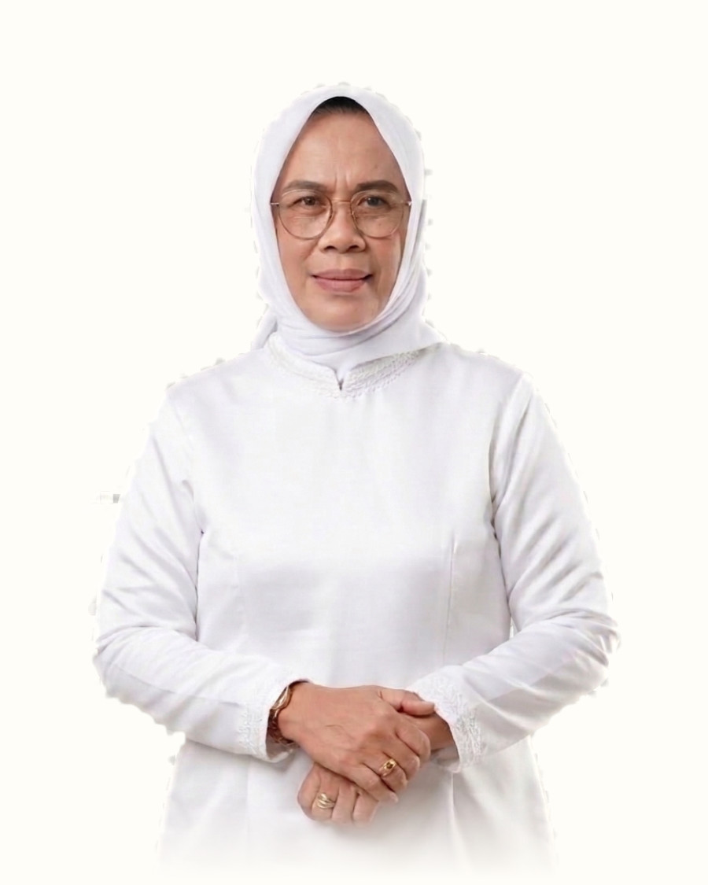

Dengan memohon rahmat dan ridho Allah SWT, kami keluarga mengundang Bapak/Ibu, Saudara/i untuk dapat menghadiri takziah hari ke-7 wafatnya Isteri, Saudara, orang tua kami tercinta.
Kehadiran dan doa Bapak/Ibu/Saudara/i adalah penghiburan terbesar bagi keluarga kami.
Atas segala perhatian, doa, dan kehadirannya kami sekeluarga mengucapkan terima kasih yang sebesar-besarnya. Mohon dimaafkan segala khilaf almarhumah semasa hidupnya.